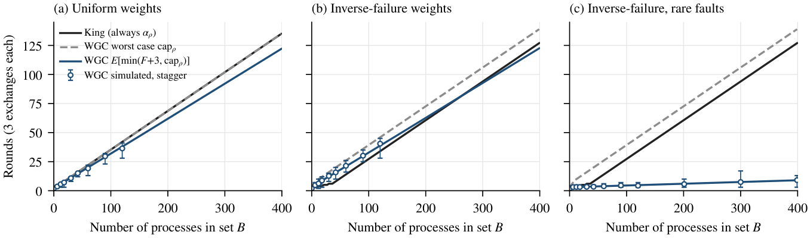
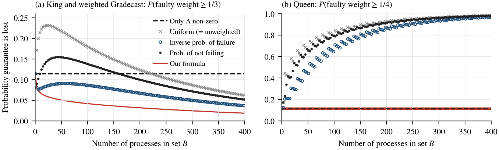
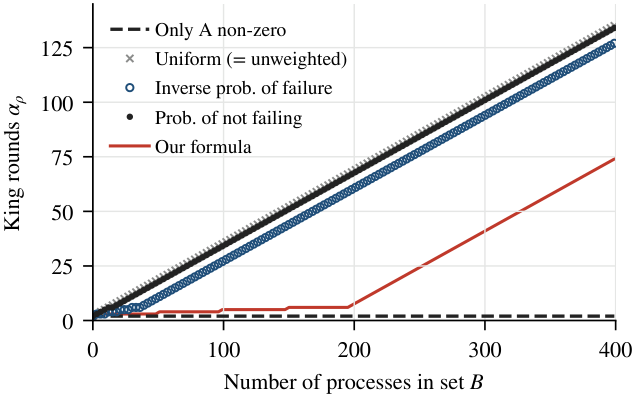
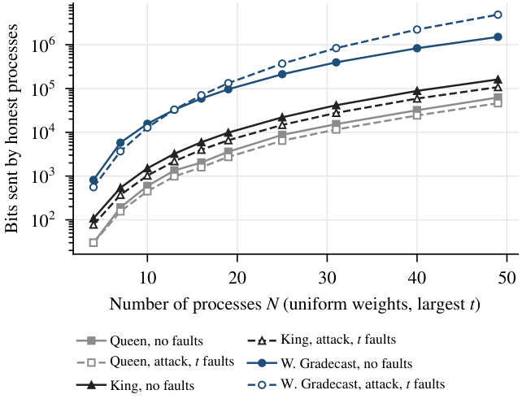
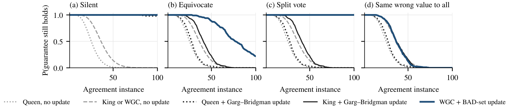

In short
In weighted Byzantine agreement, every process has a weight. Agreement only needs the faulty processes to hold at most a fraction ρ of the total weight, so many processes can fail as long as they are light.
Garg and Bridgman built weighted versions of the Queen and King algorithms. We built a weighted version of Ben-Or, Dolev and Hoch's Gradecast-based consensus, which we call WGC, by turning every count threshold into a weight threshold. We argue that WGC works for ρ < 1/3, like weighted King, and that it stops early: within min(F+3, capρ) iterations, where F is how many processes with positive weight actually fail. We then compare WGC and King on Garg and Bridgman's own setup.
The catch: heaviest vs. lightest
Weighted King rotates a king through the heaviest processes. It runs αρ rounds: the number of heaviest processes it takes to go over weight ρ, so that one of them must be honest. WGC can stop early, but in the worst case the adversary fails as many processes as it can fit under ρ, so it picks the lightest ones. WGC's worst case, capρ, is one more than the number of lightest processes that fit under ρ. It is never smaller than αρ, and with uneven weights it can be much bigger.
What we did
- Weighted Gradecast and WGC. We wrote both algorithms and a proof sketch that WGC satisfies agreement, validity and termination for ρ < 1/3, and stops within min(F+3, capρ) iterations.
- An exact simulator. A Python package of about 2,400 lines that runs weighted Queen, King and WGC against seven adversaries, including attacks built to force the worst case. It checks every weight threshold with fractions instead of floating point. A sweep of 26,208 runs found no violations.
- An evaluation on Garg and Bridgman's two-group setup. Six reliable processes (A, fail with probability 0.1) and 0 to 399 less reliable ones (B, fail with probability 0.3). We measured how often the weight bound breaks, how many rounds each algorithm needs, how many bits it sends, and how well each one drops faulty processes when weights are updated over time.
The three algorithms
| Weighted Queen | Weighted King | WGC (ours) | |
|---|---|---|---|
| Faulty weight tolerated | ρ < 1/4 | ρ < 1/3 | ρ < 1/3 |
| Steps per round | 2 | 3 | 3 |
| Rounds | αρ | αρ | ≤ min(F+3, capρ) |
| Worst case set by | heaviest | heaviest | lightest |
| Leaders per round | 1 queen | 1 king | all p |
| Remembers faulty | no | no | yes (BAD sets) |
| Entries sent per round | ≈ pN | ≈ 2pN | ≈ 2p2N |
p = number of processes with positive weight; F = how many of them actually fail.
Results
WGC vs. King: it depends on how often processes fail
King's round count depends only on the weights. WGC's depends mostly on how many processes actually fail. With Garg and Bridgman's failure rates, about 30% of B fails, so WGC can't stop much earlier than King. With uniform weights it saves about 10%, and with inverse-failure weights its worst case is worse (139 vs. 127). When faults are rare (A fails with probability 0.005 and B with 0.015), WGC's expected bound drops to 9.0. Its 240 simulated runs under the stagger attack all reached agreement and averaged 9.1 rounds at |B| = 399. King still needs 127 rounds.

King can catch up when there is a small reliable group to put the weight on. At a 60:1 weight ratio between A and B, it needs 5 rounds and loses the guarantee with probability about 10−10. So WGC pays off when faults are rare and there is no small reliable group to lean on.
Choosing weights
Say process i fails with probability pi and the algorithm tolerates faulty weight below τ. If we treat the faulty weight as roughly normal, the guarantee is safest when
So any process that fails at least as often as the bound gets weight 0. For King and WGC (τ = 1/3) this gives A and B weights of about 16.3 : 1, much more lopsided than inverse-failure's 3 : 1. It halves the chance of losing the guarantee at |B| = 399 (0.019 vs. 0.037). For Queen (τ = 1/4) it gives B weight 0.



Updating weights over time
Garg and Bridgman also describe updating weights between agreement instances: a process caught misbehaving gets weight 0. WGC's blacklists (BAD sets) make a much better rule than theirs. Against split-vote attackers, WGC kept the guarantee for all 100 instances in every run. Against equivocators it pushed the median loss from instance 37 to 69.5. Processes that tell everyone the same wrong value are invisible to every scheme, since they look like honest processes with a different input.

Takeaway
WGC is correct for the same ρ < 1/3 as weighted King and stops early, but its worst case is set by the lightest processes and it sends far more traffic. It fits best when Byzantine faults are rare, there is no small reliable group for King to lean on, and latency matters more than bandwidth. Its blacklists also make a good rule for updating weights over time.
Reproduce
Every figure and every number in the paper comes from a script in paper/. Run them from the repository root:
git clone -b paper-draft https://github.com/AmauryJayr/WBA.git && cd WBA
pip install numpy scipy pandas matplotlib
python -m unittest discover -s tests -v # correctness tests
# Figures from the simulation data already in the repo
python paper/scripts/make_figures.py # Figs. 1-4 and paper/data/numbers.txt
python paper/scripts/weight_update_fig.py # Fig. 5
# Re-run the simulations behind them
python run_experiments.py fig4compare --sim-nb 0 6 12 18 30 42 60 90 120 --draws 20
python paper/scripts/rare_sim.py # Fig. 2(c), ~21 min on 7 cores
python paper/scripts/messages.py # Fig. 4, ~15 s
python paper/scripts/weight_update.py # Section V-F numbers, ~40 min on 8 coresThe paper README lists every script and the data file each number comes from.